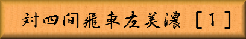

「図１」までの手順
▲７六歩 △３四歩 ▲２六歩 △４四歩 ▲４八銀 △４二飛
▲６八玉 △９四歩 ▲９六歩 △７二銀 ▲７八玉 △６二玉
▲５六歩 △３二銀 ▲５八金右 △７一玉 ▲５七銀
 |
|
||||
|
本章から四間飛車に対して居飛車側が、互角以上の玉形を築き上げて捌き合いを
目指す左美濃戦法の攻防を見て頂きます。この左美濃は後に解説する居飛車穴熊と、
序盤の手順において、大きく関わって来る戦型でもあります。 「図１」までの手順 ▲７六歩 △３四歩 ▲２六歩 △４四歩 ▲４八銀 △４二飛 ▲６八玉 △９四歩 ▲９六歩 △７二銀 ▲７八玉 △６二玉 ▲５六歩 △３二銀 ▲５八金右 △７一玉 ▲５七銀 | |||||
| Figure 1
|
▲５七銀と右銀を上がる形は、持久戦を意図している場合が多いのですが、途中 後手からの▽９四歩と端を突いて打診した手に、先手が▲９六歩と受けた事で 穴熊の可能性は低くなったと言えます。 「図１」から「図２」までの手順 △８二玉 ▲８六歩 △４三銀 ▲８七玉 △５二金左 ▲７八銀 △６四歩 ▲２五歩 △３三角 ▲６六銀 |
|||
| Figure 2
|
▲８六歩と角頭の歩を突き、▲８七玉と上がって美濃囲いに囲う形が天守閣美濃と 別名で呼ばれている左美濃の基本形です。他に▲７七角と上がり▲８八玉形で囲う形も 有りますが、相手の角の利きに入ってしまうので、今は居飛車穴熊に囲う途中で 穴熊に出来なかった時に指される事が多く、初めからその形の左美濃を目指す事は 少なくなっています。双方共に美濃囲いの堅陣を築き▲６六銀と、先手が更に堅固な ４枚美濃を目指して「図２」となります。 「図２」から「図３」までの手順 △６三金 ▲７九角 △２二飛 ▲７七銀引 △７四歩 ▲６六歩 △７三桂 ▲６七金 △５四歩 ▲９八玉 △８四歩 ▲８七銀 △８三銀 ▲７八金 △７二金 ▲３六歩 △４五歩 ▲１六歩 △４四銀 ▲３七桂 △１四歩 ▲４六歩 △同 歩 ▲同 角 |
|||
| Figure 3
|
▽６三金から自然に陣形を進展させて行くのは、振り飛車としては普通の進行と 言えますが、左美濃に対しては対位取り同様、疑問の作戦となってしまいます。 ▲７九角で▽２ニ飛を強要し、以下「図３」までは一例ですが、先手優勢の局面と なっています。４枚美濃から▲９八玉と端に玉を囲う形は、米長永世棋聖が好んで 指した事から米長玉とも呼ばれている陣形です。振り飛車側の角筋から玉を避けて、 固さでも遥かに上回る囲いで、従来の振り飛車のように強く捌く事が出来るのです。 「図２」から「図４」までの手順 △５四銀 ▲７七銀引 △６五歩 ▲７九角 △４五歩 ▲３六歩 △６三銀引 ▲６六歩 △同 歩 ▲５七金 △７四歩 ▲６六金 △７三桂 ▲３五歩 △同 歩 ▲３四歩 |
|||
| Figure 4
|
「図２」で▽５四銀から▽６五歩と突くのは、４枚美濃の理想形を簡単に許さないようにすると 言う意味で、▲７九角にも▽２ニ飛と受けなくても良いので、有力な手段と言えますが、先手陣が ▲８七玉型で角筋を避けて囲っている為、これ以上すぐに攻める手は有りません。そこで▽６三銀と 引いて固めます。この形は４枚の金銀がダイヤ型になるので、ダイヤモンド美濃と呼ばれる極めて 堅固な囲いですが、▲６六歩から歩交換で一歩手に入れ、以下「図４」まで先手が優勢となります。 固いだけでは無く何か反撃する手段が無いと居飛車の方が、元々攻めに出易い形なので、玉形で 勝る事が出来ない左美濃に対しては特に拙いのです。次章では居飛車側が積極的に攻めに出る形を 御紹介します。 |
|||

|
||||